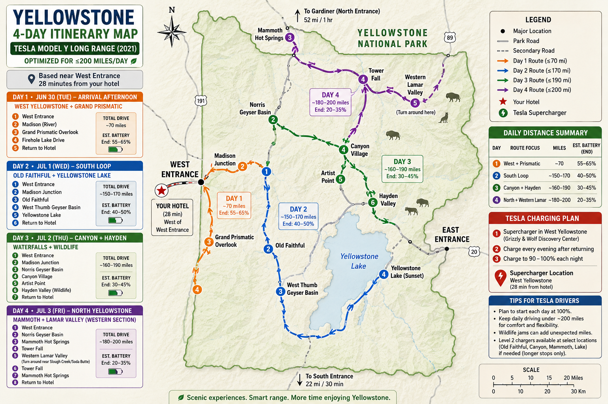

Shareable trip plan
Yellowstone 4-Day Tesla Itinerary
June 30 to July 3, 2026. Based near West Entrance, about 28 minutes from the hotel. Built around scenic loops, wildlife windows, and a daily driving target near or under 200 miles for a 2021 Tesla Model Y Long Range.
Daily focus
Pick a day
Day 1 · Jun 30 Tue
West Yellowstone and Grand Prismatic
Easy arrival afternoon with Madison River, Grand Prismatic Overlook, Firehole Lake Drive, and return to hotel.
- Estimated miles
- ~70
- Battery end
- 55-65%
- Energy style
- Light warm-up day
Day 1 West Yellowstone + Grand Prismatic
- West Entrance
- Madison River
- Grand Prismatic Overlook
- Firehole Lake Drive
- Return to hotel
Drive: ~70 miles. Estimated battery: 55-65% end.
Weather planning curve
Plan for: ~50°F morning, ~72°F afternoon, ~55°F evening.
Clothes
- Light base layer plus fleece or hoodie for cool evening.
- Rain shell in the car; afternoon storms are common.
- Comfortable walking shoes for overlook and boardwalks.
Food that fits
- Late lunch or early dinner in West Yellowstone before entering.
- Carry snacks and water for Grand Prismatic and Firehole stops.
- Dinner back in West Yellowstone after charging.
Day 2 Old Faithful + Yellowstone Lake
- West Entrance
- Madison Junction
- Old Faithful
- West Thumb Geyser Basin
- Yellowstone Lake
- Return to hotel
Drive: ~150-170 miles. Estimated battery: 40-50% end.
Weather planning curve
Plan for: ~45°F morning, ~72°F afternoon, ~50°F evening near lake areas.
Clothes
- Layered top, windbreaker, and sun hat.
- Lake stops can feel cooler and windier than Old Faithful.
- Bring sunglasses; boardwalk glare can be strong midday.
Food that fits
- Breakfast or coffee at Old Faithful Inn, Snow Lodge, or Bear Paw Deli.
- Lunch around Old Faithful before the lake loop.
- Backup grab-and-go near Lake Hotel Deli or Lake Lodge cafeteria.
Day 3 Canyon + Hayden Wildlife
- West Entrance
- Madison Junction
- Norris Geyser Basin
- Canyon Village
- Artist Point
- Hayden Valley wildlife time
- Return to hotel
Drive: ~160-190 miles. Estimated battery: 30-45% end.
Weather planning curve
Plan for: ~46°F morning, ~73°F afternoon, ~51°F evening wildlife time.
Clothes
- Warm morning layer for early Hayden Valley wildlife viewing.
- Trail shoes with grip for canyon viewpoints and stairs.
- Pack rain shell; canyon afternoons can turn quickly.
Food that fits
- Pack breakfast or grab coffee before entering to reach wildlife earlier.
- Lunch at Canyon Lodge Eatery or Falls Cafe near the route.
- Carry a picnic/snack kit so wildlife delays do not wreck dinner timing.
Day 4 Mammoth + Western Lamar Valley
- West Entrance
- Norris Geyser Basin
- Mammoth Hot Springs
- Tower Fall
- Western Lamar Valley turnaround near Slough Creek or Soda Butte
- Tower Fall
- Mammoth Hot Springs
- Return to hotel
Drive: ~180-200 miles. Estimated battery: 20-35% end.
Weather planning curve
Plan for: ~50°F morning, ~82°F lower-elevation afternoon, ~55°F evening.
Clothes
- Convertible layers: cool morning, warmer Mammoth afternoon.
- Breathable shirt, sun protection, and a light insulating layer.
- Keep binoculars and a warm layer handy for Lamar stops.
Food that fits
- Early breakfast packed in the car to protect the long driving day.
- Lunch at Mammoth Hotel Dining Room or Terrace Grill.
- Roosevelt Lodge Dining Room is a route-friendly option if timing works.
Weather context
Forecast and packing assumptions
The temperature curves above are planning estimates, not a live hourly forecast. Yellowstone's official guidance says summer days are often around 70°F, lower elevations can reach the 80s, nights stay cool, and afternoon thunderstorms are common. Refresh the forecast a few days before departure and keep rain gear plus warm layers in the Tesla.
Charging plan
Tesla notes
- Use the West Yellowstone Supercharger at Grizzly & Wolf Discovery Center.
- Charge every evening after returning.
- Charge to 90-100% each night before the next loop.
- Level 2 chargers at select park locations are backup options for longer stops.
Friend-friendly version
Simple trip story
Day 1 is the colorful geyser warm-up. Day 2 is the classic Old Faithful and lake loop. Day 3 is waterfalls, canyon views, and wildlife. Day 4 is the big northern route with Mammoth, Tower Fall, and the western Lamar Valley.
Route map
Full itinerary map
The map below is the master visual guide for the route colors, mileage estimates, charger plan, and daily stop order.
